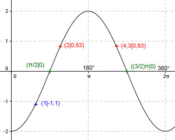

Aufgabe 153 Ergänzen Sie die Wertetabelle für x zwischen 0 und 2π: y = -2cos x x 1 2 oder 4,3 y -1,1 0,83 Amplitude = 2 ; Periode = 2π Berechnung der Nullstellen: -2cos x = 0 ---> Wegen x = π/2 + k * π und k = 0, 1 --> x1 = π/2 oder 90°, x2 = (3/2)π oder 270°.  Funktionswert an einer Stelle x ermitteln: 1 * 180° x = 1 oder ---------- = 57,3° π f(1) = -2 cos 1 = -2 cos 57,3° = -1,1 gerundet. Berechnung der x-Werte für y = f(x) = 0,83: f(x) = 0,83 eingesetzt, existiert einmal zwischen 0 und π bzw. 0° und 180° und zwischen π und 2π bzw. 180° und 360° (siehe Graph). -2cos x = 0,83 |:(-2) cos x = -0,415 --> x = arc cos -0,415 = 2 gerundet --> 2 * 180° x1 = 2 oder ---------- = 114,6° π x2 = (2π - 2) = 4,3 oder 246,4° gerundet.